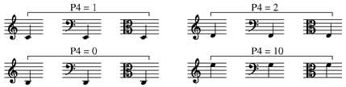

Parameter structure
Every graphics element on a page of music is called an ITEM. What and where the ITEM displays is dependent on a number of parameters associated with the ITEM number. The first four parameters do the same things for all items.
P1 Parameter 1 = the Code Number
- This identifies the type of Item to be displayed. The Code numbers range from 1 to 18. A detailed list is found
in the Contents.
P2 Parameter Parameter
2 = the Staff Number
- Every Item is attached to some Staff number. The Staff numbers range from 0 to 256, however staves 201 to 256 are reserved for an added page offset to the right (RECTO position).
P3 Parameter
3 = the horizontal position of an Item.
- The basic range of positions is 0 to 200. This encompasses
a width of 0 to 7.5 inches.
- This is designed for standard American 8.5" x 11" letter-size paper, leaving a .5" margin on each side of a normal music staff. At printing time the image may be scaled to fit any paper size.
- The horizontal position numbers are global, that is they apply equally no matter what staff sizes are used.
P4 Parameter 4 = the vertical position of an Item.

Code 14 - bar lines - is an exception to this. For Code 14, P4 indicates how many staves up from the originating staff the bar line will extend.